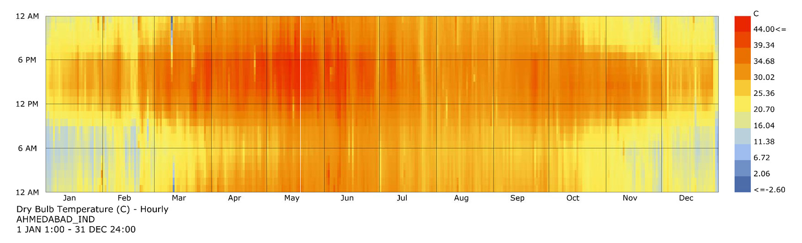
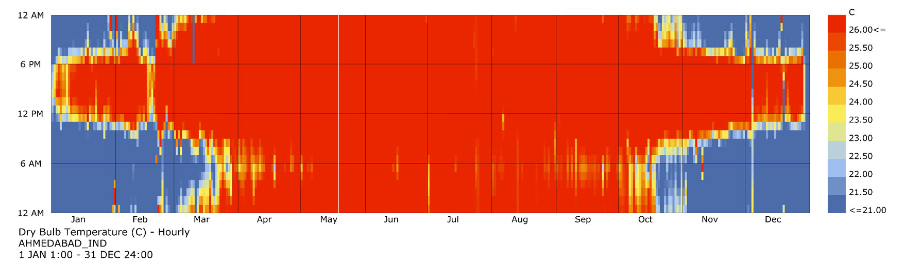

Below is chart that shows dry bulb temperature for the city of Ahmedabad throughout the year
Now from the following chart, it can be clearly seen that the outside air temperature is not really in the comfort range for most part of the year except some hours in the winter months.
